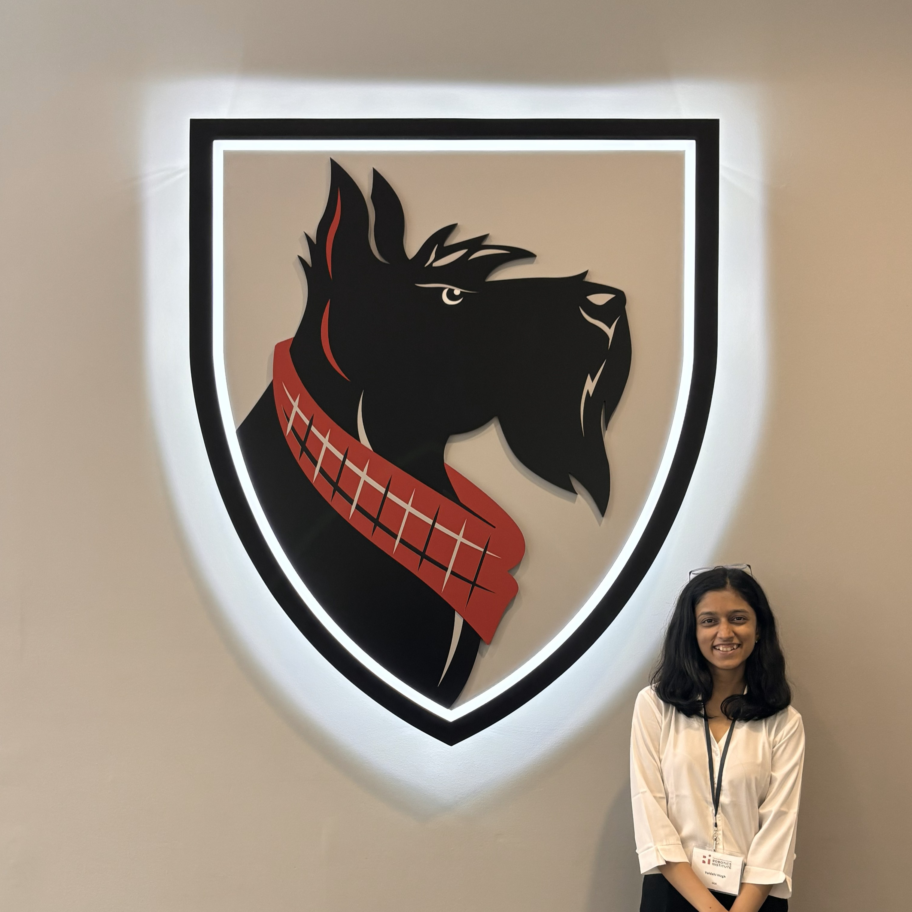
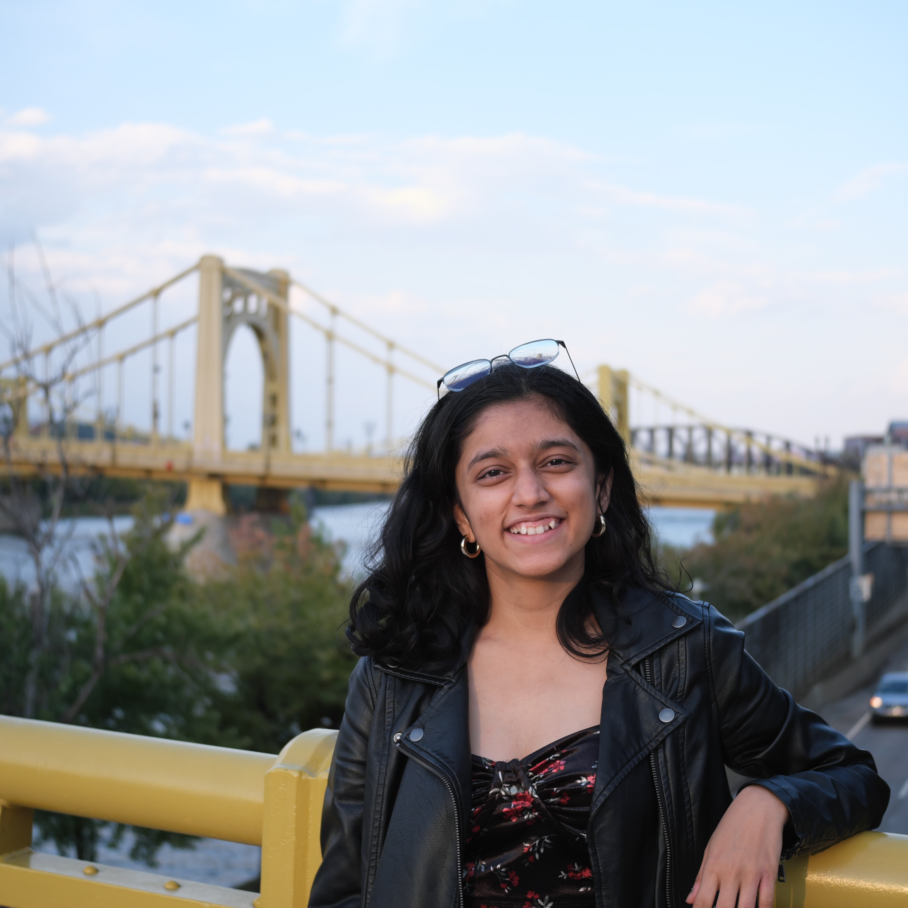

- GRA at MetaMobility Lab
- Advised by Dr. Inseung Kang
- CV
- GitHub
- Google Scholar
- vwagh[at]cs[dot]cmu[dot]edu
- pronunciation: VY-day-hee
I build human-in-the-loop exoskeleton systems that adapt to user needs in real time using edge LLMs, vision-language models, temporal ML, and transfer learning. Previously, I was a research intern at UBC and completed my Bachelor’s in Mechanical Engineering at College of Engineering, Pune, India.
I am actively seeking full-time opportunities in ML, AI, & Robotics software starting May 2026.
Research

How can we build a robust system that enables on-the-fly personalization without large-scale training datasets and ambiguous individual preferences?

Can off-the-shelf vision tools can replace subjective stroke recovery metrics?
Projects

Speech + vision interface for long-horizon planning in personalized exoskeleton control.

Designed linear actuation mechanisms with vision-based vein localization.

Human locomotion imitation using GAN-based reward models.

Stabilizing a human model on a dynamically moving platform.